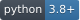
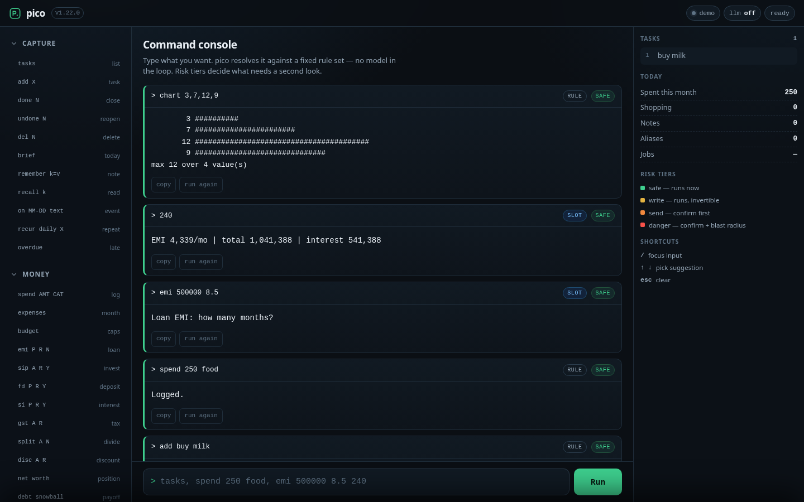

pico is a personal automation engine with 114 rules and zero dependencies. Every command resolves deterministically, every write is invertible, and the optional model can only propose a command — never run one. No account, no telemetry, no network at runtime.


Sixty-six patterns cover tasks, money, files, time, habits and text. They are regex, they are readable, and they produce the same output every time for the same input and state.
Unplugging the model removes convenience, not capability. Every command in the catalogue works with the translator deleted from disk.
When enabled, a sentence goes out and a command string comes back. That string must match an existing rule, clear a metacharacter check, avoid the deny-list, and pass the same risk gate as typing. A hallucination cannot invent an action.
Every successful translation is stored as an alias, so the same phrasing never needs the model again. Usage decays toward zero on its own.
aliases.tsks becomes tasks.Nothing here guesses silently. dry <cmd> shows which tier resolved it and what it would touch; why shows what the last command actually did.
| Tier | Applies to | Behaviour |
|---|---|---|
| safe | reads, arithmetic, lists | runs immediately |
| write | tidy, backup, fill, redact | runs, records an inverse, reversible with undo |
| send | wa, mail | requires confirm; expires after 120 s |
| danger | unjob, habit del, safe delete | requires confirm and previews the affected set |
A write-tier command proposed by the model is gated like a send. Typed by hand, it runs and stays undoable.
Tasks, notes, shopping, events, a morning brief that totals the month so far.
EMI, SIP, FD, simple interest, GST both ways, bill splits with the rounding stated, discounts, monthly caps.
Sort a folder by type, zip a tree, find by name, fill a template, count and redact a text file.
Clock, countdown, daily reminder, unit and temperature conversion, safe arithmetic.
Habit streaks, a journal, contacts, WhatsApp and mail deep links that you still press send on.
Daily jobs, the ledger, universal undo, alias learning, slot dialogue, two-key approval, dry / why / log.
| Capture | |
|---|---|
| tasks · add X · done N · undone N · del N | task spine |
| recur daily X · due N DATE · overdue | repeating and dated |
| remember k=v · recall k · forget k | notes |
| buy X · shop · bought N | shopping |
| on MM-DD text · brief | events, daily brief |
| spend AMT CAT · expenses · budget CAT AMT | money log and caps |
| Compute | |
|---|---|
| emi P R N · sip A R Y · fd P R Y · si P R Y | loan and investment |
| gst A R · split A N · disc A R | tax, bills, discounts |
| calc EXPR · convert V U to U | arithmetic, units |
| time · timer Nm MSG · remind HH:MM MSG | clock and alarms |
| Files and text | |
|---|---|
| tidy [PATH] · backup PATH · find NAME | organise, archive, locate |
| templates · fill TPL k=v | letter, invoice, email |
| safe delete PATH · quarantine · restore N | quarantine lifecycle |
| big files · old files Nd · dedupe files PATH | disk questions |
| count PATH · extract TYPE PATH · dedupe files | size, pull, find copies |
| sortlines PATH · dedupe PATH · redact PATH | clean a text file |
| Life and meta | |
|---|---|
| habit add X · did X · habits · habit del X | streaks |
| journal [show N] · contact k=v · contacts | write and store |
| wa NAME MSG · mail NAME SUBJ | deep links, you send |
| daily HH:MM CMD · jobs · unjob N | scheduled commands |
| dry CMD · why · log · undo N · aliases | safety and provenance |
| 2key on/phone · approve CODE · timeline · replay TS | two-key, history, rebuild |
| when 22:30 then … · every 30m · file GLOB · not … by · clip matches | trigger DSL |
| unless away or weekend · watch FOLDER · away on · trigger log | conditions, pauses, firings |
| chain NAME: a ; b · for each row in X.csv | sequences and loops |
| card add Q|A · review · grade 5 · decide A|B | spaced repetition, a seeded pick |
| importcsv PATH TABLE · sql SELECT … | CSV into sqlite, read-only out |
| csv filter/sort/pivot(:number) having order by · chart · net worth | shell data verbs, payoff, position |
| doctor · fix · probe · probe write | self-check, repair, read probe, write probe |
| Property | Measured |
|---|---|
| dependencies | 0 — Python standard library only |
| rules / catalogue / slots | 106 / 110 / 6 |
| packs | 12 |
| python source | 171,894 bytes across 29 files |
| console | 70,278 bytes, one HTML file |
| rule-path latency | 0.45 ms read and 1.7 ms write when empty; 1.45 / 9.5 ms at 5,000 tasks |
| engine heap | 0.1 MB |
| acceptance tests | 481 passing |
A read command does a regex match and appends one ledger line. A write command also rewrites
state.json and, every 25 changes, a snapshot — which is why the write path costs
roughly six times the read path.
Both are inside the 5 ms rule-path budget. The size budgets are the project's own and CI fails the build when any part crosses: package 96 KB, packs 96 KB, console 96 KB — one ceiling for all three.
# any of: Linux, macOS, Windows, Termux git clone https://github.com/drsamonline/pico cd pico sh install.sh # or: powershell -f install.ps1 python3 ~/pico.py # REPL python3 ~/pico.py tasks # one shot python3 ~/pico.py --ui # local console on 127.0.0.1:8765
python3 pico.py --ui # the console binds 127.0.0.1 and needs the # token in ~/.pico/web.token. LAN mode is # opt-in: --ui --lan, with a printed warning. # phone: open the LAN address and use # Add to Home Screen — it is one HTML file.
Windows, Linux and macOS one-file binaries are built by the release workflow on every tag. Android runs under Termux.
The console installs. It ships a manifest, icons and a
service worker, so Add to Home Screen gives a standalone window that opens offline. The worker
never caches /cmd or /api/state — the engine is always live. When a newer
build is waiting, the console offers a Reload bar rather than swapping underneath you.
No abstractive summarising, translation or open-ended reasoning without the optional model. No two-way WhatsApp without Meta's Cloud API and a public webhook. Timers and jobs fire only while pico is running. Pure stdlib cannot do OCR, speech or QR rendering — those need an external tool.
Phrasing is literal plus learned aliases. It does not understand, and it will say so rather than pretend.
Data at rest is plain text. Notes, contacts and the journal are JSON in
~/.pico/. The ledger redacts the output of recall,
journal, contacts and aliases, but the files themselves are
not encrypted. Use full-disk encryption if that matters to you.
Free, offline, accountless — and staying that way. Nothing is gated behind a donation: no accounts, no tracking, no network requests.
PolyForm Noncommercial 1.0.0. Use it, read it, change it, share it — for any noncommercial purpose. Commercial use needs a separate licence.
Built by Dr. Sohil Momin — homeopathic physician and builder of offline-first open-source software.